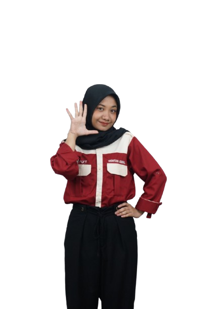

Putri Fathonah
Mahasiswi Sistem Informasi | Tech Enthusiast | AI Learner
Saya adalah mahasiswi Sistem Informasi yang memiliki minat besar pada bidang teknologi, pengembangan sistem, dan artificial intelligence. Saya senang mengeksplorasi ide, membangun solusi digital, serta terus mengembangkan diri melalui pengalaman organisasi, proyek, dan kolaborasi.

About Me
Tentang Saya
Halo! Saya Putri Fathonah, mahasiswi Sistem Informasi di Universitas Multi Data Palembang angkatan 2023 yang memiliki minat besar pada bidang teknologi dan artificial intelligence. Saya bercita-cita menjadi seorang Software Architect dan senang menggabungkan bisnis, teknologi, dan AI dalam berbagai proyek yang saya kerjakan. Bagi saya, teknologi bukan hanya tentang inovasi, tetapi juga tentang menciptakan solusi yang bermanfaat, relevan, dan berdampak positif bagi masyarakat.

Education
Pendidikan
Universitas Multi Data Palembang
S1 Sistem Informasi
Angkatan 2023 – Sekarang
Selama menempuh pendidikan, saya mempelajari berbagai bidang seperti analisis sistem, pengembangan perangkat lunak, basis data, manajemen proyek teknologi informasi, serta penerapan teknologi untuk mendukung kebutuhan bisnis dan masyarakat.
Organization
Pengalaman Organisasi
Himpunan Mahasiswa Sistem Informasi
Sekretaris Umum
2025 – 2026
Bertanggung jawab dalam mengelola administrasi organisasi, termasuk surat masuk dan surat keluar dengan total lebih dari 150 dokumen. Selain itu, saya juga menyusun notulen rapat, mendokumentasikan arsip organisasi, membantu koordinasi antar divisi, serta memastikan alur komunikasi internal berjalan dengan tertib, efektif, dan terstruktur.
Senat Mahasiswa
Kepala Departemen Seni dan Ormawa
2025 – 2026
Berperan dalam mendukung perkembangan unit kegiatan mahasiswa dan menjadi penghubung antara organisasi mahasiswa dengan pihak terkait. Saya terlibat dalam koordinasi program kerja, pengembangan kegiatan seni dan organisasi kemahasiswaan, serta mendorong kolaborasi agar kegiatan mahasiswa berjalan lebih aktif, kreatif, dan terarah.
Experience
Pengalaman

Master of Ceremony — PKKMB 2025
Menjadi pembawa acara dalam kegiatan PKKMB 2025 dengan membawakan rangkaian acara secara komunikatif, interaktif, dan terstruktur. Pengalaman ini membantu saya meningkatkan kemampuan public speaking, kepercayaan diri, serta kemampuan membangun suasana yang positif di hadapan audiens.
Sekretaris Umum dan Mentor — LKMM UMDP 2025
Berperan sebagai sekretaris umum sekaligus mentor dalam kegiatan LKMM UMDP 2025. Saya bertanggung jawab dalam pengelolaan administrasi kegiatan, penyusunan dokumen, serta mendampingi peserta selama pelaksanaan program. Pengalaman ini memperkuat kemampuan saya dalam manajemen, komunikasi, kepemimpinan, dan pendampingan tim.


Peserta — LKMM Regional
Mengikuti kegiatan LKMM Regional sebagai bentuk pengembangan diri dalam bidang kepemimpinan, organisasi, dan kolaborasi. Dari kegiatan ini, saya memperoleh wawasan baru mengenai manajemen tim, pengambilan keputusan, serta pentingnya membangun relasi dan komunikasi yang efektif dalam lingkungan organisasi.
Projects
Proyek

Pengembangan Aplikasi Website pada Instansi BUMN
Dalam kegiatan magang di salah satu instansi BUMN, saya terlibat dalam pengembangan aplikasi berbasis website untuk mendukung kebutuhan sistem informasi. Pada proyek ini, saya berkontribusi dalam proses perancangan fitur, pengembangan antarmuka, serta implementasi sistem menggunakan Laravel dan teknologi web lainnya. Pengalaman ini membantu saya memahami alur pengembangan aplikasi secara nyata, mulai dari analisis kebutuhan hingga implementasi sistem.

Website Pengelolaan Penginapan Kost
Saya mengembangkan website pengelolaan kost yang dirancang untuk mempermudah proses pendataan kamar, penghuni, serta pengelolaan informasi penginapan secara lebih terstruktur. Proyek ini dibuat untuk menghadirkan sistem yang fungsional, efisien, dan mudah digunakan, dengan memanfaatkan teknologi web sesuai kebutuhan pengguna. Melalui proyek ini, saya belajar membangun solusi digital yang tidak hanya berjalan dengan baik, tetapi juga memberikan kemudahan dalam pengelolaan data.
Skills
Keahlian
Soft Skills
Hard Skills
AI Tools
Contact
Mari Terhubung
Saya terbuka untuk peluang kolaborasi, pengembangan proyek, maupun diskusi seputar teknologi, organisasi, dan artificial intelligence.